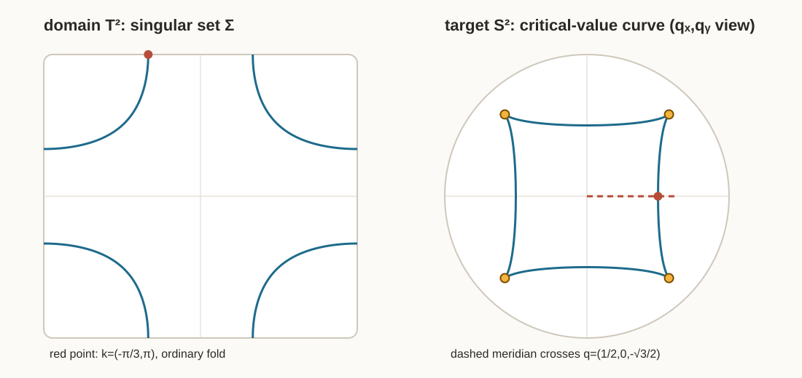

winding form 적분에서 two-band map의 fold와 cusp까지
오늘 처음 계산할 것은 Hamiltonian도 projector도 아니다. 반지름 $R$인 원을 $\gamma_m(t)=(R\cos mt,R\sin mt)$, $0\le t\le2\pi$ 로 $m$번 돌고 $\displaystyle \oint_{\gamma_m}\frac{-Y\,dX+X\,dY}{X^2+Y^2}=2\pi m$ 을 얻는 일이다.
그다음 같은 적분을 $-\oint *du$, $\int K\,dA$, $\int f^*\omega_{\mathrm{FS}}$, regular value의 원상 주위 winding으로 차례로 다시 읽는다. 독자가 two-band 계산에 도착했을 때에는 “새 적분이 아니라, 부호를 가진 winding form을 또 적분하는구나”라고 느껴야 한다.
정리나 필연성은 마지막이다. 먼저 실제 대각선 $k(t)=(t,t)$에서 $\bar\lambda(0,0)=\frac12$, $\bar\lambda(\frac\pi2,\frac\pi2)=0$, $\bar\lambda(\pi,\pi)=-\frac1{18}$ 을 계산하여, 구면의 양의 곡률면적을 $f$가 같은 방향으로 옮기다가 한 번 납작해지고, 그 뒤 뒤집어 옮기는 장면부터 본다.

이 노트에서 사실의 출처를 읽는 법
- [논문] Huang, A Gauss-Bonnet Theorem for Quantum States의 식 또는 명시적 주장이다.
- [유도] 논문의 실제 $d(k)$를 넣어 이 노트에서 전개한 식이다.
- [수치] 아래 검산 스크립트가 독립적으로 계산한 근 또는 적분 근삿값이다.
- [검산] 다른 계산 경로와 맞춰 본 결과다.
논문: arXiv 2510.15760 · HTML 원문
독립 검산:
$$ \texttt{python verify\_two\_band\_fold\_trace.py --write-svg assets/two\_band\_fold\_sheet\_trace.svg} $$
0. 긴 워밍업 — 끝까지 남는 계산은 winding form 적분이다
이 절에서는 아직 논문의 $d(k)$를 쓰지 않는다. 미적분학에서 이미 아는 원, 로그, Jacobian만으로 이후 계산에 나오는 모든 부호를 먼저 목격한다.
W1. 원을 한 번 돌면 왜 $2\pi$인가
원점을 뺀 평면에 1-form
$$ \vartheta=\frac{-Y\,dX+X\,dY}{X^2+Y^2} $$
를 둔다. $\vartheta$는 국소적으로 $d\arg(X+iY)$다. 그러나 원점을 한 바퀴 도는 영역 전체에서는 $\arg$를 한 값으로 고를 수 없으므로, $\vartheta$를 전역적인 $d$(한 값 함수)라고 생각하면 안 된다.
반지름 $R>0$인 원을 반시계로 $m$번 도는 곡선
$$ \gamma_m(t)=(R\cos mt,R\sin mt),\qquad 0\le t\le2\pi $$
에 직접 대입한다.
$$ X=R\cos mt,\quad Y=R\sin mt,\quad dX=-Rm\sin mt\,dt,\quad dY=Rm\cos mt\,dt. $$
따라서
$$ \begin{aligned} \gamma_m^*\vartheta &=\frac{-R\sin mt(-Rm\sin mt\,dt) +R\cos mt(Rm\cos mt\,dt)}{R^2}\\ &=m\,dt, \end{aligned} $$
$$ \boxed{\oint_{\gamma_m}\vartheta=2\pi m.} \tag{W1} $$
반시계 한 바퀴는 $+2\pi$, 시계 한 바퀴는 $-2\pi$다. 반지름은 사라진다. 이 적분은 크기가 아니라 감긴 횟수를 센다.
W2. $-m\log r$의 경계 flux는 같은 적분이다
orientation을 $dX\wedge dY$로 고정하고
$$ *dX=dY,\qquad *dY=-dX $$
로 둔다. $r=\sqrt{X^2+Y^2}$, $u_m=-m\log r$이면
$$ du_m=-m\frac{X\,dX+Y\,dY}{X^2+Y^2}, $$
$$ *du_m=-m\frac{X\,dY-Y\,dX}{X^2+Y^2}=-m\vartheta. $$
그러므로
$$ \boxed{-*du_m=m\vartheta,\qquad -\oint_{C_R}*du_m=2\pi m.} \tag{W2.1} $$
임의의 $u$에 대해서도
$$ *du=u_X\,dY-u_Y\,dX, $$
$$ d(*du) =(u_{XX}+u_{YY})\,dX\wedge dY =\Delta u\,dX\wedge dY. $$
따라서
$$ \boxed{-\Delta u\,dX\wedge dY=-d(*du),} \tag{W2.2} $$
$$ \int_D-\Delta u\,dX\,dY=-\oint_{\partial D}*du. $$
관찰. 라플라시안의 이중적분은 새 계산이 아니다. 경계에서 winding form을 적분하는 계산으로 밀려난다.
W3. 둥근 구면의 총곡률은 두 바퀴다
입체사영 좌표 $w=X+iY$, $r=|w|$에서
$$ g_{S^2}=e^{2u}|dw|^2,\qquad u=\log2-\log(1+r^2). $$
직접 미분하면
$$ du=-\frac{2r}{1+r^2}\,dr,\qquad *dr=r\,d\theta, $$
$$ -*du=\frac{2r^2}{1+r^2}\,d\theta. $$
그러므로
$$ -\oint_{C_R}*du =\frac{4\pi R^2}{1+R^2} \longrightarrow4\pi. $$
즉
$$ \boxed{-*du\longrightarrow2\,d\theta,\qquad \int_{S^2}K\,dA=4\pi.} \tag{W3.1} $$
최근 라플라시안 노트의 $u=-2\log r+O(1)$에서 보였던 숫자 $2$는 winding form $d\theta$가 두 번 남는다는 뜻이다.
이 노트의 FS 정규화는
$$ \omega_{\mathrm{FS}}=\frac12K\,dA. $$
따라서
$$ A_{\mathrm{conn}} :=-\frac12*du =\frac{r^2}{1+r^2}\,d\theta =\frac{X\,dY-Y\,dX}{1+X^2+Y^2} $$
로 놓으면
$$ dA_{\mathrm{conn}} =\omega_{\mathrm{FS}} =\frac{2}{(1+r^2)^2}\,dX\wedge dY, $$
$$ \boxed{\lim_{R\to\infty}\oint_{C_R}A_{\mathrm{conn}} =\oint d\theta=2\pi =\int_{S^2}\omega_{\mathrm{FS}}.} \tag{W3.2} $$
둥근 총곡률은 두 바퀴, FS 면적은 한 바퀴다. 이 factor $2$를 이후에 다시 발명하지 않는다.
W4. 무한대의 좌표변환도 같은 두 바퀴를 기록한다
$z=1/w$이면
$$ \frac{dz}{dw}=-\frac1{w^2}. $$
$w=\varepsilon e^{i\theta}$를 한 바퀴 돌릴 때
$$ \log\left|\frac{dz}{dw}\right|=-2\log|w|, \qquad d\arg\frac{dz}{dw}=-2\,d\theta. $$
최근 노트의 $-2\log|w|$, 접다발 전이함수의 차수 $2$, 총곡률 $4\pi$는 모두 같은 $w^{-2}$를 실수 로그, 복소 위상, winding integral로 달리 읽은 값이다.
W5. 양의 구면 밀도를 map으로 당기면 부호는 어디서 생기는가
먼저 W5.1에서 W5.2로 가는 줄을 생략 없이 쓴다. 구면의 orientation을 보존하는 입체사영 좌표를 $w=X+iY$라 하자. W3에서
$$ \omega_{\mathrm{FS}} =\frac12(-\Delta_wu)\,dX\wedge dY, \qquad -\Delta_wu=\frac4{(1+X^2+Y^2)^2} $$
를 이미 계산했다. 토러스의 orientation은 $dk_x\wedge dk_y$로 고정한다. 이제 실제로 당긴다.
$$ (w\circ f)(k_x,k_y) =X(k_x,k_y)+iY(k_x,k_y), $$
$$ dX=X_x\,dk_x+X_y\,dk_y,\qquad dY=Y_x\,dk_x+Y_y\,dk_y, $$
$$ f^*(dX\wedge dY) =(X_xY_y-X_yY_x)\,dk_x\wedge dk_y. $$
여기까지가 2-form $dX\wedge dY$를 당긴 계산이다. 이제 양의 함수 $-\Delta_wu$도 합성함수로 당긴다.
$$ \begin{aligned} f^*\omega_{\mathrm{FS}} &=f^*\!\left[ \frac12(-\Delta_wu)(X,Y)\,dX\wedge dY \right]\\ &=\frac12(-\Delta_wu)(X(k),Y(k)) \,f^*(dX\wedge dY)\\ &=\frac12(-\Delta_wu)(f(k)) \det\frac{\partial(X,Y)}{\partial(k_x,k_y)} \,dk_x\wedge dk_y. \end{aligned} \tag{W5.1} $$
왼쪽 2-form의 계수를
$$ f^*\omega_{\mathrm{FS}} =\bar\lambda(k)\,dk_x\wedge dk_y $$
라고 정의하여 양변의 $dk_x\wedge dk_y$ 계수를 읽으면 비로소
$$ \boxed{ \bar\lambda(k) = \frac12(-\Delta_wu)(f(k)) \det\frac{\partial(X,Y)}{\partial(k_x,k_y)}. } \tag{W5.2} $$
이다. 즉 W5.1에서 W5.2로 갈 때 없어진 것은 없다. 공통 기저 $dk_x\wedge dk_y$를 양변에서 읽어 그 앞의 숫자함수를 $\bar\lambda$라고 부른 것뿐이다.
이제 장난감 map이 아니라 이 노트의 실제 map
$$ f(k)=-\frac{d(k)}{|d(k)|},\qquad d(k)=(\sin k_x,\sin k_y,1-\cos k_x-\cos k_y) $$
에서 토러스 패치 두 개를 직접 잡는다. 약자로
$$ s_x=\sin k_x,\quad s_y=\sin k_y,\quad c_x=\cos k_x,\quad c_y=\cos k_y,\quad \rho=|d(k)| $$
를 쓴다.
W5-A. 북극으로 가는 토러스 패치: 부호 $+$
토러스에서
$$ U_+=\{(k_x,k_y):|k_x|<\pi/6,\ |k_y|<\pi/6\} $$
를 잡는다. 이 안에서는
$$ 1-c_x-c_y<1-2\cos(\pi/6)=1-\sqrt3<0, $$
이므로 $n=f(k)=-d/\rho$의 세 번째 성분은 $n_3>0$이다. 따라서 $f(U_+)$는 북반구에 들어가며 남극을 뺀 orientation-preserving chart
$$ w_+(n)=\frac{n_1+in_2}{1+n_3}=X_++iY_+ $$
를 실제로 쓸 수 있다. $n=-d/\rho$를 대입하면
$$ (w_+\circ f)(k) =\frac{-s_x-is_y}{\rho-1+c_x+c_y}. \tag{W5.A1} $$
$(0,0)$에서는 $d=(0,0,-1)$, $\rho=1$, $f(0,0)=(0,0,1)$, $w_+\circ f=0$이고 분모는 $2$다. 분자가 $0$이므로 이 점에서 몫의 미분은 분자의 미분을 $2$로 나눈 것뿐이다.
$$ \begin{aligned} X_+(k)&=\frac{-\sin k_x}{\rho-1+c_x+c_y}, &Y_+(k)&=\frac{-\sin k_y}{\rho-1+c_x+c_y},\\ \partial_{k_x}X_+(0,0)&=-\frac12, &\partial_{k_y}X_+(0,0)&=0,\\ \partial_{k_x}Y_+(0,0)&=0, &\partial_{k_y}Y_+(0,0)&=-\frac12. \end{aligned} $$
따라서
$$ D(w_+\circ f)_{(0,0)} =\begin{pmatrix}-1/2&0\\0&-1/2\end{pmatrix}, \qquad \det D(w_+\circ f)_{(0,0)}=\frac14. $$
target 좌표가 $w_+=0$이므로 $(-\Delta u)(0)=4$. W5.2에 숫자를 그대로 넣으면
$$ \boxed{ \bar\lambda(0,0) =\frac12\cdot4\cdot\frac14 =\frac12>0. } \tag{W5.A2} $$
토러스 패치의 두 좌표방향은 구면 북극 패치에서 둘 다 반전되지만, 두 번 반전되므로 면의 orientation은 보존된다.
W5-B. 남극으로 가는 토러스 패치: 부호 $-$
이번에는 토러스의 $(\pi,\pi)$ 주위에서 orientation을 보존하는 국소좌표
$$ u=k_x-\pi,\qquad v=k_y-\pi,\qquad du\wedge dv=dk_x\wedge dk_y $$
를 쓰고
$$ U_-=\{(u,v):|u|<\pi/6,\ |v|<\pi/6\} $$
를 잡는다. 이 안에서는 $c_x,c_y<-\sqrt3/2$이므로
$$ 1-c_x-c_y>1+\sqrt3>0, $$
따라서 $n_3<0$이고 $f(U_-)$는 남반구에 들어간다. 남극 근처에서는 북극을 뺀 chart를 쓴다. orientation을 보존하려면 복소켤레가 들어간
$$ w_-(n)=\frac{n_1-in_2}{1-n_3}=X_-+iY_- $$
를 써야 한다. 이 켤레를 빼면 target chart 자체가 orientation을 뒤집으므로 지금 찾는 $f$의 부호와 chart의 부호가 섞인다. 실제 map을 대입하면
$$ (w_-\circ f)(k) =\frac{-s_x+is_y}{\rho+1-c_x-c_y}. \tag{W5.B1} $$
$(\pi,\pi)$에서는 $d=(0,0,3)$, $\rho=3$, $f(\pi,\pi)=(0,0,-1)$, $w_-\circ f=0$이고 분모는 $6$이다. $\sin(\pi+u)=-\sin u$, $\sin(\pi+v)=-\sin v$이므로
$$ X_-(u,v)=\frac{\sin u}{6}+O(u^2+v^2), \qquad Y_-(u,v)=\frac{-\sin v}{6}+O(u^2+v^2). $$
따라서
$$ D(w_-\circ f)_{(0,0)} =\begin{pmatrix}1/6&0\\0&-1/6\end{pmatrix}, \qquad \det D(w_-\circ f)_{(0,0)}=-\frac1{36}. $$
이번에도 target 좌표는 $w_-=0$이므로 $(-\Delta u)(0)=4$. W5.2는
$$ \boxed{ \bar\lambda(\pi,\pi) =\frac12\cdot4\cdot\left(-\frac1{36}\right) =-\frac1{18}<0. } \tag{W5.B2} $$
를 준다. $u$-방향은 target의 $X_-$-방향으로 가지만 $v$-방향은 $Y_-$-방향을 거꾸로 가므로, 이 토러스 패치는 구면의 양의 면적형식을 뒤집어 가져온다.
두 계산은 뒤에서 유도할 전역식
$$ \bar\lambda(k)=\frac{N}{2(3-2N)^{3/2}}, \qquad N=c_x+c_y-c_xc_y $$
과 독립적으로 맞는다. $(0,0)$에서는 $N=1$이라 $1/2$, $(\pi,\pi)$에서는 $N=-3$이라 $-1/18$이다.
| 엔티티 | 뜻 | 부호 |
|---|---|---|
| $-\Delta_wu$ | 구면의 곡률면적 밀도 | 항상 $+$ |
| $\det Df$ | 방향을 보존·반전하는 signed Jacobian | $+,0,-$ |
| $\bar\lambda$ | $f^*\omega_{\mathrm{FS}}$의 계수 | $\det Df$와 같음 |
음의 $\bar\lambda$는 구면의 곡률이 음수가 됐다는 뜻이 아니다. 양의 구면 면적을 $f$가 뒤집어서 가져왔다는 뜻이다.
$u$를 고정된 $(k_x,k_y)$에 대한 토러스의 전역 등각인자라고 쓰지 않는다. $u$는 target 입체사영 좌표의 함수이고, regular sheet에서 $w\circ f$를 통해 당겨 쓴다.
W6. 세 개의 map으로 $+$, $-$, fold를 먼저 본다
$$ F_+(p,q)=(p,q),\qquad \det DF_+=1, $$
$$ F_-(p,q)=(p,-q),\qquad \det DF_-=-1. $$
첫 map은 작은 반시계 원을 반시계 원으로, 둘째 map은 시계 원으로 보낸다. winding integral은 각각 $+2\pi$, $-2\pi$다.
이제 fold 모형
$$ F_{\mathrm{fold}}(p,q)=(p,q^2) $$
을 계산한다.
$$ DF_{\mathrm{fold}} =\begin{pmatrix}1&0\\0&2q\end{pmatrix}, \qquad \det DF_{\mathrm{fold}}=2q. $$
따라서 $q>0$에서는 $+$, $q=0$에서는 $0$, $q<0$에서는 $-$다. target 점 $(a,b)$의 원상은
$$ p=a,\qquad q^2=b. $$
- $b>0$: $(a,+\sqrt b)$, $(a,-\sqrt b)$, 부호는 $+,-$.
- $b=0$: 두 원상이 $(a,0)$에서 만나고 Jacobian이 $0$.
- $b<0$: 실수 원상이 없다.
원상 개수는 $2\to1_{\mathrm{critical}}\to0$으로 변하지만 생성·소멸하는 signed sum은
$$ (+1)+(-1)=0. $$
이것이 이후 $1\leftrightarrow3$에서 보게 될 쌍의 국소 모형이다.
W7. 실제 two-band map의 대각선에서 $+\to0\to-$를 본다
뒤에 직접 유도할 식을 한 줄 먼저 빌린다.
$$ \bar\lambda(k_x,k_y) =\frac{N}{2(3-2N)^{3/2}}, \qquad N=\cos k_x+\cos k_y-\cos k_x\cos k_y. $$
$k(t)=(t,t)$, $c=\cos t$이면
$$ N(t,t)=c(2-c), $$
$$ \boxed{ \bar\lambda(t,t) =\frac{c(2-c)}{2(3-4c+2c^2)^{3/2}}. } \tag{W7.1} $$
따라서
$$ \bar\lambda(0,0)=\frac12,\qquad \bar\lambda\!\left(\frac\pi2,\frac\pi2\right)=0,\qquad \bar\lambda(\pi,\pi)=-\frac1{18}. $$
이 경로에서 실제로 $+\to0\to-$를 목격한다. 가운데에서는
$$ \det g=\bar\lambda^2=0 $$
이므로 두 domain 방향이 target에서 독립적인 두 방향으로 움직이지 못한다. 이 장면을 본 뒤에만 singular point라는 이름을 붙인다.
W8. regular value 주위의 작은 원들이 degree를 센다
regular value $y\in S^2$에 대해
$$ f^{-1}(y)=\{k_1,\dots,k_r\} $$
라 하자. 각 $k_i$ 주위에 작은 반시계 원 $C_i$를 잡고, orientation을 보존하는 target 국소좌표 $\zeta$를 $\zeta(y)=0$이 되게 고른다. 그러면
$$ \boxed{ \varepsilon_i = \frac1{2\pi}\oint_{C_i} d\arg\bigl(\zeta(f(k))\bigr) = \operatorname{sgn}\det df_{k_i}. } \tag{W8.1} $$
왼쪽은 winding form 적분이고 오른쪽은 sheet의 $+$, $-$다. 따라서
$$ \boxed{ \deg f = \sum_{k_i\in f^{-1}(y)}\varepsilon_i = \frac1{2\pi}\int_{T^2}f^*\omega_{\mathrm{FS}}. } \tag{W8.2} $$
$y$를 뺀 구면에서 $\omega_{\mathrm{FS}}=dA_y$가 되도록 $y$에서만 gauge 특이성을 가진 $A_y$를 고른다. $k_i$ 주위의 작은 원판을 도려내고 Stokes 정리를 쓴다. 부호를 생략하지 말자. $C_i$는 source의 반시계 원이지만, 도려낸 영역의 경계 orientation은 $-C_i$다. 또한 target에서 반시계로 $y$를 도는 작은 원을 $C_y$라 하면
$$ \oint_{C_y}A_y\longrightarrow-2\pi, $$
즉 $A_y$의 특이한 부분은 $-d\arg\zeta$다. 따라서
$$ \begin{aligned} \int_{T^2}f^*\omega_{\mathrm{FS}} &=\lim_{\varepsilon\to0} \sum_i\oint_{-C_i}f^*A_y\\ &=\sum_i\bigl[-(-2\pi\varepsilon_i)\bigr]\\ &=2\pi\sum_i\varepsilon_i. \end{aligned} $$
첫 번째 음수는 source에서 원판을 도려낸 경계 orientation, 두 번째 음수는 target 접속형식의 특이항에서 왔다. 매끄러운 나머지의 작은 원 적분은 $0$으로 간다.
fold의 두 원상은 target을 반대 방향으로 감으므로
$$ (+2\pi)+(-2\pi)=0. $$
원상 개수는 바뀌지만 degree가 바뀌지 않는 이유는 winding integral의 상쇄다.
W9. 이제서야 중간값정리와 Gauss–Bonnet을 붙인다
만일 $f:T^2\to S^2$가 어디에서도 singular하지 않다면 $\bar\lambda\ne0$이다. $\bar\lambda$는 연속이고 $T^2$는 연결되어 있으므로 $\bar\lambda>0$ 전체 또는 $\bar\lambda<0$ 전체다.
여기서 전체가 양수 또는 음수인 정확한 엔티티는
$$ \boxed{ \bar\lambda = \frac{f^*\omega_{\mathrm{FS}}}{dk_x\wedge dk_y} } $$
다. Gauss 곡률 스칼라 $K_g$가 아니다.
가정 아래 $g=f^*g_{S^2}$는 매끄러운 Riemannian metric이고 $f$는 각 regular sheet에서 local isometry다. 따라서
$$ K_g=1,\qquad K_g\,dA_g=2|\bar\lambda|\,dk_x\wedge dk_y. $$
그러므로
$$ \int_{T^2}K_g\,dA_g =2\int_{T^2}|\bar\lambda|\,dk_x\,dk_y>0. $$
그러나 Gauss–Bonnet은
$$ \int_{T^2}K_g\,dA_g=2\pi\chi(T^2)=0 $$
이라고 한다. 모순이다. 따라서 $\bar\lambda=0$인 점이 반드시 있다.
이 결론은 마지막 줄이다. 발생 순서는 반대였다.
$$ \oint d\theta \longrightarrow -\oint *du \longrightarrow \int K\,dA \longrightarrow \int f^*\omega_{\mathrm{FS}} \longrightarrow \sum\operatorname{sgn}\det df \longrightarrow \text{singularity의 필연성}. $$
I. 먼저 풀 문제 — 검산 답은 II부에 있다
하루 배치
| 묶음 | 권장 시간 | 손에 남겨야 할 것 |
|---|---|---|
| W1–W2. 원·로그·flux | 45분 | $\oint\vartheta=2\pi m$과 $-*d(-m\log r)=m\vartheta$를 빈 종이에 재현 |
| W3–W4. 구면·무한대 | 40분 | $4\pi$는 두 winding, $2\pi$는 한 winding이라는 factor 표 |
| W5–W7. pullback·toy fold | 55분 | 양의 밀도 $\times$ signed Jacobian, $F(p,q)=(p,q^2)$, 실제 $+\to0\to-$ |
| W8–W9. 작은 원·필연성 | 40분 | 각 원상 주위 $\pm2\pi$와 마지막 Gauss–Bonnet 모순 |
| 0. 규약 고정 | 20분 | 부호와 $2\pi/4\pi$를 적은 한 장 |
| 1. signed density | 50분 | $\bar\lambda=N/[2(3-2N)^{3/2}]$ 직접 유도 |
| 2. singular/critical curve | 70분 | $T^2$의 $\Sigma$와 $S^2$의 $\widetilde\Sigma$를 따로 그리기 |
| 3. 정확한 fold trace | 90분 | $\theta=0^\circ\to40^\circ$ root ledger |
| 4. cusp 주변 continuation | 80분 | root ID가 교환되는 표 |
| 5. 적분과 degree | 60분 | signed/unsigned 적분을 각각 한 번 |
| 6. CP¹ 계산과 접합 | 35분 | $ub-va$가 여기서 무슨 부호인지 |
| 7. 마지막 위상 논리 | 25분 | 계산 뒤에만 covering obstruction 쓰기 |
중간에 막히면 문제 전체를 읽지 말고, 현재 표에서 다음 줄의 같은 sheet가 무엇인지만 찾는다.
워밍업 재현 카드 — 위 풀이를 덮고 여섯 번 다시 한다
- $R=3$, $m=-2$인 $\gamma_m$에 $\vartheta$를 직접 대입하여 $-4\pi$를 얻어라. 반지름 $3$이 사라지는 줄에 밑줄을 그어라.
- $u=-3\log r$에 대해 $-*du=3\vartheta$를 $dX,dY$ 성분으로 다시 계산하라.
- $u=\log2-\log(1+r^2)$에서 $R=1$인 원판의 둥근 총곡률이 $2\pi$, FS 면적이 $\pi$임을 경계적분으로 계산하라.
- $F(p,q)=(p,q^2)$에서 target $(2,\tfrac14)$의 두 원상과 $\det DF$의 부호를 적고, 두 작은 원의 winding 합을 계산하라.
- $k(t)=(t,t)$에서 $t=\tfrac\pi3,\tfrac\pi2,\tfrac{2\pi}3$의 $\bar\lambda$ 부호를 분모 계산 없이 먼저 판정한 뒤 실제 값으로 검산하라.
- regular value의 원상이 세 개이고 부호가 $+,+,-$일 때 $\sum_i\oint_{C_i}d\arg(\zeta\circ f)$를 계산하고 $\deg f$를 읽어라.
이 여섯 문제의 목적은 공식을 외우는 것이 아니다. 원상, Jacobian, 곡률적분이 등장할 때마다 손이 자동으로 “작은 원을 어느 방향으로 몇 번 감았나?”로 돌아가게 만드는 것이다.
0번. Convention lock를 손으로 한 번 베껴 쓴다
- $T^2=(-\pi,\pi]^2/\sim$와 orientation $dk_x\wedge dk_y$를 적어라.
- $d(k)$, $\widehat d$, lower-band projector $P$, lower-band Bloch vector $n$ 사이의 부호를 적어라.
- unit Bloch sphere의 outward area form $\omega_{S^2}$, paper/FS area form $\omega_{\mathrm{FS}}$, normalized form $\tau$의 총적분을 각각 적어라.
- $\bar\lambda>0$가 orientation preserving이라는 규약을 적어라.
1번. $d(k)$에서 signed Jacobian을 만든다
[논문 Eq. (22)]
$$ d(k_x,k_y) = (\sin k_x,\sin k_y,1-\cos k_x-\cos k_y). $$
다음을 한 줄씩 계산하라.
- $\partial_xd$, $\partial_yd$.
- $\partial_xd\times\partial_yd$.
- $d\cdot(\partial_xd\times\partial_yd)$.
- $r^2=|d|^2$.
- [논문 Eq. (38)] $$ \bar\lambda =-\frac12\widehat d\cdot (\partial_x\widehat d\times\partial_y\widehat d) $$ 에 넣고 한 분수로 정리.
- $g_{\mu\nu}=\operatorname{tr}[(\partial_\mu P)(\partial_\nu P)]$에서 $\det g=\bar\lambda^2$를 직접 보일 것.
계산 중간에
$$ N(k):=\cos k_x+\cos k_y-\cos k_x\cos k_y $$
를 도입하되, 왜 이 $N$을 도입했는지 한 문장으로 적어라.
2번. domain의 singular curve와 target의 critical-value curve를 분리한다
- $\det g=0$을 $N(k)=0$으로 바꾸어라.
- 논문 Appendix D Eq. (75)에 $\tan k\,\sin k=\sin^2k/\cos k$를 넣고, $\cos k_x\cos k_y$를 곱해 $N=0$과 비교하라.
- 왜 Eq. (75)를 글자 그대로 쓰면 $\cos k_x=\cos k_y=0$인 cusp 점이 식의 정의역에서 빠지는지 적어라.
- $c=\cos k_x$로 두고 $$ \cos k_y=-\frac{c}{1-c} $$ 를 얻어라. 허용 범위가 $c\in[-1,\tfrac12]$임을 확인하라.
- $\Sigma$ 위에서 $|d|^2=3$임을 보이고, critical-value curve $$ \widetilde\Sigma=f(\Sigma) $$ 를 $c$와 두 sine 부호로 매개화하라.
- $(\pi/2,\pi/2)$에서 kernel과 $\Sigma$의 tangent가 같음을 직접 계산하라.
- $(-\pi/3,\pi)$에서는 kernel과 $\Sigma$의 tangent가 서로 가로지름을 직접 계산하라.
마지막 두 계산 뒤에만 각각 cusp와 ordinary fold라는 이름을 붙인다.
3번. 정확한 fold trace — 근 공식을 써서 $1\leftrightarrow3$을 완주한다
target 경로를
$$ q(\theta)=(\sin\theta,0,-\cos\theta), \qquad 0\le\theta\le40^\circ $$
로 잡는다.
- $q_y=0$에서 모든 원상이 $k_y=0$ 또는 $k_y=\pi$ 위에 있어야 함을 보이라.
- $k_y=0$ branch를 정확히 구해 sheet $A$라 이름 붙여라.
- $k_y=\pi$, $u=-k_x\in[0,\pi]$에서 $$ \frac{\sin u}{2-\cos u}=\tan\theta $$ 를 얻어라.
- $t=\tan(u/2)$를 넣어 이차방정식을 만들고 두 근을 sheet $B,C$로 계속 추적하라.
- 판별식이 사라지는 $\theta$와 두 근이 만나는 source 점을 정확히 구하라.
- 아래 표를 계산기로 직접 채워라. $B,C$는 정렬 순서가 아니라 앞 단계 근과의 연속성으로 이어라.
| $\theta$ | $q(\theta)$ | sheet $A$ | sheet $B$ | sheet $C$ | signed sum |
|---|---|---|---|---|---|
| $0^\circ$ | |||||
| $10^\circ$ | |||||
| $20^\circ$ | |||||
| $25^\circ$ | |||||
| $29^\circ$ | |||||
| $29.9^\circ$ | |||||
| $30^\circ$ | critical | ||||
| $30.1^\circ$ | |||||
| $35^\circ$ | |||||
| $40^\circ$ |
4번. cusp 주변에서는 root의 이름까지 보존한다
source cusp
$$ k_c=(\pi/2,\pi/2) $$
와 그 target
$$ q_c=\frac{(-1,-1,-1)}{\sqrt3} $$
를 쓴다. target tangent frame을
$$ e_A=\frac{(1,1,-2)}{\sqrt6}, \qquad e_B=\frac{(1,-1,0)}{\sqrt2} $$
로 잡고
$$ q(A,B)= \frac{q_c+A e_A+B e_B}{\sqrt{1+A^2+B^2}} $$
로 움직인다.
- $A=0.04$를 고정하고 $B=-0.012\to0.012$로 움직여 모든 원상을 구하라.
- 한 단계의 root를 다음 단계 root에 torus 거리로 연결하라.
- 들어갈 때 생기는 $+$, $-$ pair와 나올 때 사라지는 pair를 서로 구분하라.
- 원상 개수 $1,3,1$만 적었을 때 놓치는 사실을 한 문장으로 적어라.
- 선택 도전: $k_x=\pi/2+s+t$, $k_y=\pi/2+s-t$를 넣어 cusp의 leading term을 구하라.
수치 root finder를 썼다면 반드시 다음을 기록한다.
- 시작 seed 집합
- torus wrapping 방식
- root clustering tolerance
- full three-vector residual
- 이전 step과 다음 step 사이의 root matching 기준
5번. 원상 trace를 실제 적분으로 닫는다
- $\theta<30^\circ$의 regular target 주위에 작은 원판 $D\subset S^2$를 잡고, 세 원상 근방을 $U_A,U_B,U_C$라 하라.
- 각 제한 $f:U_i\to D$에서 change of variables를 적용해 $$ \int_{U_i}f^*(\omega_{S^2}/2) $$ 를 $D$의 면적으로 바꾸어라.
- $\theta<30^\circ$와 $\theta>30^\circ$에서 실제 부호 합을 각각 써라.
- $T^2$ 전체에서 $$ \frac1{2\pi}\int_{T^2}\bar\lambda\,dk_x\,dk_y $$ 와 $$ \frac1{2\pi}\int_{T^2}|\bar\lambda|\,dk_x\,dk_y $$ 를 midpoint grid로 따로 계산하라.
- unsigned integral이 signed integral보다 큰 양이 정확히 무엇의 두 배인지 적어라.
6번. CP¹ 손계산의 $ub-va$를 이 문제에 꽂는다
선생님의 기존 계산
$$ dA_{\mathrm{conn}} =\frac{2}{(1+|z|^2)^2}\,dx\wedge dy, $$
$$ \operatorname{Im}Q(X,Y) =\frac{ub-va}{(1+|z|^2)^2}, \qquad \frac12dA_{\mathrm{conn}}=\operatorname{Im}Q $$
를 사용한다.
- unit sphere area form이 $$ \omega_{S^2} =\frac{4}{(1+|z|^2)^2}\,dx\wedge dy $$ 임을 대조하라.
- 이 논문의 $\bar\lambda\,dk_x\wedge dk_y$가 $f^*dA_{\mathrm{conn}}$인지 $f^*\operatorname{Im}Q$인지 factor를 확인하라.
- $ub-va$의 부호가 sheet orientation과 같은 이유를 적어라.
7번. 이제서야 singularity의 필연성을 쓴다
계산을 모두 마친 뒤 다음 빈칸을 채운다.
만약 $f:T^2\to S^2$가 모든 점에서 rank $2$라면 $f$는 __이다. $T^2$가 compact이므로 이는 proper이고, 따라서 _이 된다. 그런데 $S^2$는 simply connected이므로 connected covering은 ___이어야 한다. 이는 $T^2\not\cong S^2$와 모순이다.
이 논리는 앞의 root trace를 대체하지 않는다. 앞 계산에서 실제로 본 fold pair의 출생과 소멸을, 전역적으로 피할 수 없다는 마지막 확인일 뿐이다.
II. 검산용 완전 풀이
0. Convention lock
[논문 Eq. (21)–(22)]
$$ T^2=(-\pi,\pi]^2/\sim, \qquad \operatorname{or}(T^2)=dk_x\wedge dk_y, $$
$$ d=(\sin k_x,\sin k_y,1-\cos k_x-\cos k_y), \qquad \widehat d=\frac d{|d|}. $$
[논문 Eq. (22) 아래]
$$ P=\frac12(I-\widehat d\cdot\sigma). $$
[유도: lower-band 부호를 target 좌표로 옮김]
$$ P=\frac12(I+n\cdot\sigma) \quad\Longrightarrow\quad n=-\widehat d. $$
따라서 이 노트의 실제 map은
$$ f:T^2\longrightarrow S^2, \qquad f(k)=n(k)=-\widehat d(k). $$
unit Bloch sphere에는 outward orientation을 주고
$$ \omega_{S^2,n}(u,v)=n\cdot(u\times v), \qquad \int_{S^2}\omega_{S^2}=4\pi $$
로 둔다.
[유도]
$$ \omega_{\mathrm{FS}}:=\frac12\omega_{S^2}, \qquad \int_{S^2}\omega_{\mathrm{FS}}=2\pi, $$
$$ \tau:=\frac{\omega_{S^2}}{4\pi} =\frac{\omega_{\mathrm{FS}}}{2\pi}, \qquad \int_{S^2}\tau=1. $$
[논문 Eq. (23)–(24), Eq. (38) + 위 부호 변환]
$$ f^*\omega_{\mathrm{FS}} =\bar\lambda\,dk_x\wedge dk_y, \qquad \bar\lambda =\frac12n\cdot(\partial_xn\times\partial_yn) =-\frac12\widehat d\cdot (\partial_x\widehat d\times\partial_y\widehat d). $$
따라서 이 노트에서는
$$ \bar\lambda>0 \Longleftrightarrow f\text{가 }(dk_x,dk_y)\text{의 방향을 보존}, $$
$$ \bar\lambda<0 \Longleftrightarrow f\text{가 방향을 뒤집음} $$
으로 고정한다. 이후의 모든 $+$, $-$는 이 한 줄의 부호다.
1. signed density를 $d(k)$ 하나에서 끝까지 유도
약자를
$$ s_x=\sin k_x,\quad c_x=\cos k_x, \qquad s_y=\sin k_y,\quad c_y=\cos k_y $$
로 둔다.
1.1 세 벡터
[유도]
$$ d=(s_x,s_y,1-c_x-c_y), $$
$$ \partial_xd=(c_x,0,s_x), \qquad \partial_yd=(0,c_y,s_y). $$
따라서
$$ \begin{aligned} \partial_xd\times\partial_yd &= \begin{vmatrix} \mathbf i&\mathbf j&\mathbf k\\ c_x&0&s_x\\ 0&c_y&s_y \end{vmatrix}\\ &=(-s_xc_y,-c_xs_y,c_xc_y). \end{aligned} $$
1.2 triple product
[유도]
$$ \begin{aligned} d\cdot(\partial_xd\times\partial_yd) &=-s_x^2c_y-c_xs_y^2+(1-c_x-c_y)c_xc_y\\ &=-(1-c_x^2)c_y-c_x(1-c_y^2) +(1-c_x-c_y)c_xc_y\\ &=-c_y+c_x^2c_y-c_x+c_xc_y^2 +c_xc_y-c_x^2c_y-c_xc_y^2\\ &=-c_x-c_y+c_xc_y. \end{aligned} $$
여기서
$$ \boxed{N(k):=c_x+c_y-c_xc_y} $$
라고 둔다. 이 $N$은 장식이 아니다. signed density의 분자이면서 singular set의 방정식이 되기 때문에 한 번 이름을 붙인다.
즉
$$ d\cdot(\partial_xd\times\partial_yd)=-N. $$
1.3 분모
[유도]
$$ \begin{aligned} r^2=|d|^2 &=s_x^2+s_y^2+(1-c_x-c_y)^2\\ &=(1-c_x^2)+(1-c_y^2) +1+c_x^2+c_y^2-2c_x-2c_y+2c_xc_y\\ &=3-2(c_x+c_y-c_xc_y)\\ &=\boxed{3-2N}. \end{aligned} $$
1.4 paper formula에 대입
정규화된 벡터의 triple product에는
$$ \widehat d\cdot (\partial_x\widehat d\times\partial_y\widehat d) = \frac{d\cdot(\partial_xd\times\partial_yd)}{|d|^3} $$
가 성립한다. $\partial\widehat d$에 생기는 $d$ 방향 항은 마지막 triple product에서 두 번 같은 방향이 들어가 사라진다.
[유도]
$$ \begin{aligned} \bar\lambda &=-\frac12 \frac{d\cdot(\partial_xd\times\partial_yd)}{r^3}\\ &=-\frac12\frac{-N}{r^3}\\ &=\boxed{ \frac{N}{2(3-2N)^{3/2}} }. \end{aligned} $$
1.5 metric determinant와 같은 zero set
[논문 Eq. (2)]
$$ g_{\mu\nu} =\operatorname{tr}[(\partial_\mu P)(\partial_\nu P)]. $$
Pauli trace $\operatorname{tr}(\sigma_i\sigma_j)=2\delta_{ij}$와
$$ \partial_\mu P=\frac12(\partial_\mu n)\cdot\sigma $$
를 넣으면
$$ g_{\mu\nu} =\frac12\partial_\mu n\cdot\partial_\nu n. $$
따라서
$$ \begin{aligned} \det g &=\frac14\left( |\partial_xn|^2|\partial_yn|^2 -(\partial_xn\cdot\partial_yn)^2 \right)\\ &=\frac14|\partial_xn\times\partial_yn|^2. \end{aligned} $$
$\partial_xn,\partial_yn$은 unit sphere의 tangent이므로 그 cross product는 $n$과 나란하다. 그러므로
$$ \det g =\frac14 \left[n\cdot(\partial_xn\times\partial_yn)\right]^2 =\boxed{\bar\lambda^2}. $$
[검산] metric이 퇴화하는 점, signed density가 $0$인 점, map의 orientation이 바뀌는 경계가 모두 같은 $N=0$으로 합쳐졌다.
2. $\Sigma\subset T^2$와 $\widetilde\Sigma\subset S^2$
2.1 singular set
[유도]
$$ \det g=0 \Longleftrightarrow \bar\lambda=0 \Longleftrightarrow \boxed{N=c_x+c_y-c_xc_y=0}. $$
[논문 Appendix D, Eq. (75)]
$$ \tan k_x\sin k_x+\tan k_y\sin k_y+c_x+c_y-1=0. $$
여기서
$$ \tan k_x\sin k_x=\frac{s_x^2}{c_x} $$
를 넣고 $c_xc_y$를 곱하면
$$ s_x^2c_y+s_y^2c_x+c_x^2c_y+c_xc_y^2-c_xc_y=0. $$
$$ s_x^2+c_x^2=1, \qquad s_y^2+c_y^2=1 $$
을 묶으면
$$ c_y+c_x-c_xc_y=0, $$
즉 $N=0$이다.
주의. Eq. (75)의 $\tan$ 표현은 $c_xc_y=0$에서 글자 그대로 정의되지 않는다. 반면 triple-product에서 직접 얻은 $N=0$은 그 점에서도 잘 정의된다. 따라서 cusp 네 점은 Eq. (75)의 closure에서 복구되는 것이 아니라, 직접 유도한 $N=0$에 원래부터 들어 있다.
2.2 domain curve의 실제 매개화
$$ c:=c_x $$
로 두면
$$ c+c_y-cc_y=0 $$
이므로
$$ \boxed{c_y=-\frac{c}{1-c}}. $$
$|c_y|\le1$을 풀면
$$ \boxed{-1\le c\le\frac12}. $$
각 $c$에 대해
$$ k_x=\varepsilon_x\arccos c, \qquad k_y=\varepsilon_y \arccos\left(-\frac{c}{1-c}\right), \qquad \varepsilon_x,\varepsilon_y\in\{\pm1\}, $$
로 네 arc를 얻고, torus 경계에서 서로 이어 붙인다.
2.3 target critical-value curve
$\Sigma$에서는 $N=0$이므로
$$ r^2=3-2N=3. $$
따라서 target 값은
$$ \boxed{ q_\Sigma =-\frac1{\sqrt3} \left( \varepsilon_x\sqrt{1-c^2}, \varepsilon_y\sqrt{1-\frac{c^2}{(1-c)^2}}, 1-c+\frac{c}{1-c} \right) }. $$
동일한 셋째 성분을
$$ 1-c-c_y=1-cc_y $$
로 써도 된다.
[논문] 논문은 Appendix D에서 source singular curve의 방정식을 주고, Fig. 3에서 target의 critical-value contour를 그림으로 제시한다.
[유도] 위 상자는 그 target contour를 이 모델에서 직접 찍을 수 있게 만든 명시적 매개화다.
2.4 cusp 네 점
$c=0$이면 $c_y=0$이다. 따라서
$$ (k_x,k_y)=(\pm\pi/2,\pm\pi/2) $$
의 네 점이 나오고,
$$ \boxed{ q_c=\frac{(-\varepsilon_x,-\varepsilon_y,-1)}{\sqrt3} } $$
가 네 cusp value다.
이제 $(\pi/2,\pi/2)$ 하나를 직접 본다.
$$ d=(1,1,1), \qquad \partial_xd=(0,0,1), \qquad \partial_yd=(0,0,1). $$
따라서
$$ \partial_xn=\partial_yn $$
이고 kernel은
$$ \eta=(1,-1). $$
한편
$$ \nabla N = (-s_x(1-c_y),-s_y(1-c_x)) $$
이므로 cusp source에서
$$ \nabla N=(-1,-1). $$
$\Sigma=N^{-1}(0)$의 tangent는 $\nabla N$에 수직인
$$ u=(1,-1) $$
이다. 즉
$$ \boxed{\eta\parallel u}. $$
kernel 방향으로 걸어도 일차 변화가 없고, 그 kernel 자체가 singular curve를 따라간다. [논문 + 직접 확인] 이 점이 cusp다.
2.5 오늘 건널 ordinary fold
$$ k_f=(-\pi/3,\pi) $$
에서는
$$ d=\left(-\frac{\sqrt3}{2},0,\frac32\right), $$
$$ \partial_xd =\left(\frac12,0,-\frac{\sqrt3}{2}\right) =-\frac1{\sqrt3}d, $$
이므로
$$ \partial_xn=0. $$
따라서 kernel은 $\eta=\partial_x$다.
또
$$ \nabla N=(\sqrt3,0), $$
이므로 $\Sigma$의 tangent는 $\partial_y$다. 즉
$$ \boxed{\eta=\partial_x\ \text{는}\ T\Sigma=\operatorname{span}(\partial_y)\ \text{를 가로지른다}.} $$
kernel이 singular curve와 나란하지 않고 횡단한다. 이 점이 ordinary fold다.
그 target은
$$ \begin{aligned} q_f &=-\frac d{|d|}\\ &=-\frac1{\sqrt3} \left(-\frac{\sqrt3}{2},0,\frac32\right)\\ &=\boxed{\left(\frac12,0,-\frac{\sqrt3}{2}\right)} =q(\pi/6). \end{aligned} $$
3. 자오선 위 모든 원상의 정확한 계보
3.1 $k_y$가 먼저 갈라진다
$$ q_y(\theta)=0. $$
그런데
$$ n_y(k)=-\frac{\sin k_y}{|d(k)|}. $$
$|d|>0$이므로
$$ \sin k_y=0 $$
이고
$$ \boxed{k_y=0\quad\text{또는}\quad k_y=\pi}. $$
3.2 sheet $A$: $k_y=0$
$$ d(k_x,0)=(\sin k_x,0,-\cos k_x), \qquad |d|=1. $$
따라서
$$ n(k_x,0)=(-\sin k_x,0,\cos k_x). $$
$$ n=q(\theta) $$
를 만족하는 연속 branch는
$$ \boxed{ k_A(\theta)=(-\pi+\theta,0) }. $$
이 branch에서는
$$ N=c_x+1-c_x=1, \qquad \bar\lambda_A=\frac12, $$
따라서 항상 $+$ sheet다.
3.3 sheets $B,C$: $k_y=\pi$
$$ d(k_x,\pi) =(\sin k_x,0,2-\cos k_x). $$
$q_x>0$인 경로를 따라 $k_x=-u$, $0\le u\le\pi$로 두면
$$ d=(-\sin u,0,2-\cos u). $$
target의 $x$-성분과 $-z$-성분의 비를 취하면
$$ \frac{\sin u}{2-\cos u}=\tan\theta. $$
$$ t=\tan\frac u2 $$
를 넣으면
$$ \sin u=\frac{2t}{1+t^2}, \qquad \cos u=\frac{1-t^2}{1+t^2} $$
이므로
$$ \frac{2t}{1+3t^2}=\tan\theta. $$
따라서
$$ 3\tan\theta\,t^2-2t+\tan\theta=0 $$
이고 두 근은
$$ \boxed{ t_{B,C} = \frac{1\mp\sqrt{1-3\tan^2\theta}} {3\tan\theta} }, $$
$$ \boxed{ k_{B,C}(\theta) = \left( -2\arctan t_{B,C}, \pi \right) }. $$
$\theta\to0$에서
$$ t_B\to0,\qquad t_C\to\infty $$
이므로
$$ k_B(0)=(0,\pi), \qquad k_C(0)=(-\pi,\pi). $$
이 극한이 sheet 이름의 provenance다. 각 step에서 $k_x$의 정렬 순서로 이름을 다시 붙이지 않는다.
3.4 두 근이 실제로 만나는 순간
판별식은
$$ 1-3\tan^2\theta. $$
따라서
$$ \theta<\pi/6 $$
에서는 두 근,
$$ \theta=\pi/6 $$
에서는 중근,
$$ \theta>\pi/6 $$
에서는 실근이 없다.
중근은
$$ t=\frac1{\sqrt3}, \qquad u=2\arctan\frac1{\sqrt3}=\frac\pi3, $$
따라서
$$ \boxed{k_B=k_C=(-\pi/3,\pi)}. $$
앞 절에서 독립적으로 찾은 ordinary fold와 정확히 같은 점이다.
3.5 orientation
$k_y=\pi$에서는
$$ N=c_x-1+c_x=2\cos u-1. $$
따라서
$$ u_B<\pi/3 \Longrightarrow N_B>0, $$
$$ u_C>\pi/3 \Longrightarrow N_C<0. $$
즉 $B$는 $+$, $C$는 $-$이고, fold에서 둘 다 $0$으로 만난다.
3.6 완성된 trace ledger
아래 $k$ 좌표는 radian이다.
| $\theta$ | $q(\theta)$ | $A:(k_x,k_y);\operatorname{sgn}\bar\lambda$ | $B:(k_x,k_y);\operatorname{sgn}\bar\lambda$ | $C:(k_x,k_y);\operatorname{sgn}\bar\lambda$ | signed sum |
|---|---|---|---|---|---|
| $0^\circ$ | $(0,0,-1)$ | $(-3.141593,0);+$ | $(0,\pi);+$ | $(-3.141593,\pi);-$ | $+1$ |
| $10^\circ$ | $(0.173648,0,-0.984808)$ | $(-2.967060,0);+$ | $(-0.180154,\pi);+$ | $(-2.612373,\pi);-$ | $+1$ |
| $20^\circ$ | $(0.342020,0,-0.939693)$ | $(-2.792527,0);+$ | $(-0.404221,\pi);+$ | $(-2.039240,\pi);-$ | $+1$ |
| $25^\circ$ | $(0.422618,0,-0.906308)$ | $(-2.705260,0);+$ | $(-0.570675,\pi);+$ | $(-1.698253,\pi);-$ | $+1$ |
| $29^\circ$ | $(0.484810,0,-0.874620)$ | $(-2.635447,0);+$ | $(-0.817524,\pi);+$ | $(-1.311778,\pi);-$ | $+1$ |
| $29.9^\circ$ | $(0.498488,0,-0.866897)$ | $(-2.619739,0);+$ | $(-0.971148,\pi);+$ | $(-1.126738,\pi);-$ | $+1$ |
| $30^\circ$ | $(0.500000,0,-0.866025)$ | $(-2.617994,0);+$ | $(-1.047198,\pi);0$ | 같은 critical root, $B=C$ | critical |
| $30.1^\circ$ | $(0.501511,0,-0.865151)$ | $(-2.616249,0);+$ | 없음 | 없음 | $+1$ |
| $35^\circ$ | $(0.573576,0,-0.819152)$ | $(-2.530727,0);+$ | 없음 | 없음 | $+1$ |
| $40^\circ$ | $(0.642788,0,-0.766044)$ | $(-2.443461,0);+$ | 없음 | 없음 | $+1$ |
$30^\circ$ 행의 $B,C$ 두 칸은 서로 다른 두 점이 아니라 같은 critical root를 provenance 때문에 두 번 표시한 것이다.
$$ A=(-2.617994,0),\qquad B=C=(-1.047198,\pi). $$
fold 직전에는 위치만 가까워지는 것이 아니다.
| $\theta$ | $\bar\lambda_A$ | $\bar\lambda_B$ | $\bar\lambda_C$ |
|---|---|---|---|
| $29^\circ$ | $+0.500000$ | $+0.054026$ | $-0.030766$ |
| $29.9^\circ$ | $+0.500000$ | $+0.014168$ | $-0.011841$ |
| $30^\circ$ | $+0.500000$ | $0$ | $0$ |
| $30.1^\circ$ | $+0.500000$ | 없음 | 없음 |
두 sheet의 signed area density가 서로 반대편에서 $0$으로 들어오고, 같은 source 점에서 사라진다.
4. cusp 주변: 개수 $1,3,1$보다 더 많은 일이 일어난다
4.1 수치 경로와 계산법
[유도]
$$ q_c=\frac{(-1,-1,-1)}{\sqrt3}, \quad e_A=\frac{(1,1,-2)}{\sqrt6}, \quad e_B=\frac{(1,-1,0)}{\sqrt2}. $$
$$ q(0.04,B) = \frac{q_c+0.04e_A+B e_B} {\sqrt{1+0.04^2+B^2}}. $$
[수치 방법]
- $[-\pi,\pi)^2$의 $17\times17$ seed grid에서 시작했다.
- 두 target tangent 성분에 Newton method를 적용했다.
- 매 step마다 $k$를 $[-\pi,\pi)$로 wrap했다.
- full residual $\|n(k)-q\|<10^{-8}$인 후보만 남겼다.
- torus 거리 $10^{-6}$ 안의 후보는 같은 root로 묶었다.
- 표의 sheet ID는 이전 $B$ step의 root와 가장 가까운 연속 branch를 따라 붙였다.
4.2 두 fold crossing의 정확한 위치
[수치 + critical curve의 명시적 매개화로 독립 확인]
$$ B_* = 0.0055714973\ldots $$
이다.
들어가는 fold:
$$ B=-B_*, \qquad k=(1.3594165,1.8395366). $$
나오는 fold:
$$ B=+B_*, \qquad k=(1.8395366,1.3594165). $$
4.3 provenance를 보존한 표
$S_0^+$는 $B=-0.012$에서 이미 있던 sheet다. $S_{\mathrm{new}}^+$와 $S^-$는 첫 fold에서 함께 태어난다.
| $B$ | target $q=(q_x,q_y,q_z)$ | sheet ID | source $k=(k_x,k_y)$ | sign |
|---|---|---|---|---|
| $-0.012$ | $(-0.569010,-0.552054,-0.609479)$ | $S_0^+$ | $(2.047018,1.039696)$ | $+$ |
| $-0.006$ | $(-0.564801,-0.556323,-0.609512)$ | $S_0^+$ | $(2.018354,1.092921)$ | $+$ |
| $-0.005$ | $(-0.564098,-0.557032,-0.609515)$ | $S_{\mathrm{new}}^+$ | $(1.293557,1.889099)$ | $+$ |
| $-0.005$ | 같은 $q$ | $S^-$ | $(1.430834,1.781812)$ | $-$ |
| $-0.005$ | 같은 $q$ | $S_0^+$ | $(2.012459,1.103344)$ | $+$ |
| $0$ | $(-0.560572,-0.560572,-0.609523)$ | $S_{\mathrm{new}}^+$ | $(1.167291,1.974302)$ | $+$ |
| $0$ | 같은 $q$ | $S^-$ | $(1.613965,1.613965)$ | $-$ |
| $0$ | 같은 $q$ | $S_0^+$ | $(1.974302,1.167291)$ | $+$ |
| $+0.005$ | $(-0.557032,-0.564098,-0.609515)$ | $S_{\mathrm{new}}^+$ | $(1.103344,2.012459)$ | $+$ |
| $+0.005$ | 같은 $q$ | $S^-$ | $(1.781812,1.430834)$ | $-$ |
| $+0.005$ | 같은 $q$ | $S_0^+$ | $(1.889099,1.293557)$ | $+$ |
| $+0.006$ | $(-0.556323,-0.564801,-0.609512)$ | $S_{\mathrm{new}}^+$ | $(1.092921,2.018354)$ | $+$ |
| $+0.012$ | $(-0.552054,-0.569010,-0.609479)$ | $S_{\mathrm{new}}^+$ | $(1.039696,2.047018)$ | $+$ |
따라서 실제 사건은 다음과 같다.
$$ \begin{array}{ccl} B<-B_* &:& S_0^+\\[2mm] B=-B_* &:& S_{\mathrm{new}}^+,\ S^- \text{가 pair로 출생}\\[2mm] -B_*<B<B_* &:& S_0^+,\ S_{\mathrm{new}}^+,\ S^-\\[2mm] B=B_* &:& S_0^+,\ S^- \text{가 pair로 소멸}\\[2mm] B>B_* &:& S_{\mathrm{new}}^+ \end{array} $$
고립된 원상 개수만 보면 놓치는 것. 개수는 그저 $1\to3\to1$이지만, 마지막의 한 원상은 처음의 $S_0^+$가 아니다. cusp lobe를 통과하는 동안 살아남는 sheet의 identity가 교환되었다.
4.4 cusp의 leading term
$$ k_x=\frac\pi2+s+t, \qquad k_y=\frac\pi2+s-t $$
로 둔다. $t$는 cusp에서의 kernel/tangent 방향이고, $s$는 그 횡방향이다.
[유도: Taylor leading terms]
$$ N=-2s-s^2+t^2+\text{higher terms}. $$
$\Sigma:N=0$ 위에서는
$$ s=\frac12t^2+O(t^4). $$
target tangent coordinates
$$ a=q\cdot e_A, \qquad b=q\cdot e_B $$
의 leading term은
$$ a= \frac{2\sqrt2}{3}s+\frac{\sqrt2}{6}t^2+\cdots, \qquad b= \frac2{\sqrt6}st+\cdots. $$
$\Sigma$의 $s=\tfrac12t^2+\cdots$를 넣으면
$$ \boxed{ a=\frac{\sqrt2}{2}t^2+\cdots, \qquad b=\frac1{\sqrt6}t^3+\cdots }. $$
따라서 critical-value curve는 cusp 근방에서
$$ \boxed{ b^2=\frac{\sqrt2}{3}a^3+\text{higher terms} } $$
의 semicubical cusp를 만든다.
$a=0.04$를 넣은 leading prediction은
$$ |b|\approx0.00549 $$
이고, 실제 critical curve 교점은
$$ |B_*|=0.0055714973\ldots $$
였다. [검산] local Taylor 계산과 전역 수치 root trace가 같은 cusp 폭을 준다.
5. trace를 signed area와 degree로 닫기
5.1 작은 target 원판 하나
$\theta<30^\circ$인 regular target $q(\theta)$ 주위에 critical-value curve를 만나지 않는 작은 원판 $D\subset S^2$를 잡는다.
세 원상 근방을 $U_A,U_B,U_C$라 하면 각 제한
$$ f_i:U_i\longrightarrow D $$
는 한 장짜리 local diffeomorphism이다.
따라서
$$ \int_{U_i}f^*\omega_{\mathrm{FS}} = \operatorname{sgn}(\bar\lambda_i) \int_D\omega_{\mathrm{FS}}. $$
fold 전에는
$$ \begin{aligned} \sum_{i=A,B,C}\int_{U_i}f^*\omega_{\mathrm{FS}} &=(+1+1-1)\int_D\omega_{\mathrm{FS}}\\ &=\boxed{\int_D\omega_{\mathrm{FS}}}. \end{aligned} $$
fold 후에는 $A$ 하나만 있으므로
$$ \int_{U_A}f^*\omega_{\mathrm{FS}} =+1\int_D\omega_{\mathrm{FS}}. $$
즉 fold는 원상 수를 $3\to1$로 바꾸지만, 사라지는 두 장의 부호가 $+,-$이므로 signed multiplicity는
$$ \boxed{+1} $$
로 남는다.
5.2 전역 적분
[수치: $800\times800$ midpoint grid]
$$ \int_{T^2}\bar\lambda\,dk_x\,dk_y =6.283185307179587, $$
$$ \boxed{ \frac1{2\pi}\int_{T^2}\bar\lambda\,dk_x\,dk_y =1.0000000000000002 }. $$
반면
$$ \int_{T^2}|\bar\lambda|\,dk_x\,dk_y =7.470388507829067, $$
$$ \boxed{ \frac1{2\pi}\int_{T^2}|\bar\lambda|\,dk_x\,dk_y =1.188949257837884 }. $$
negative sheet의 면적 크기는
$$ A_-:= \int_{\bar\lambda<0}(-\bar\lambda)\,dk_x\,dk_y =0.5936016003247402 $$
이고
$$ \frac{A_-}{2\pi}=0.0944746289. $$
따라서
$$ \int|\bar\lambda|-\int\bar\lambda =2A_-. $$
[논문 수치] 논문은 unsigned quantum volume을 $1.1889\times2\pi$, triple-covered target 영역의 한 장 면적을 $0.0945\times2\pi$로 보고한다.
[검산] 이 노트의 독립 midpoint 값 $1.1889493$과 $0.0944746$가 각각 일치한다.
이것이 “fold 때문에 volume은 커지지만 Chern number는 그대로”라는 문장의 계산 내용이다. $+$, $-$를 버리면 extra two sheets가 둘 다 면적으로 더해지고, 부호를 보존하면 서로 지워진다.
6. CP¹에서 계산한 $ub-va$는 여기서 무엇인가
stereographic coordinate $z=x+iy$, $S=1+|z|^2$에서 unit sphere area form은
$$ \omega_{S^2} =\frac4{S^2}\,dx\wedge dy. $$
따라서
$$ \omega_{\mathrm{FS}} =\frac12\omega_{S^2} =\frac2{S^2}\,dx\wedge dy. $$
선생님의 기존 CP¹ 계산은
$$ dA_{\mathrm{conn}} =\frac2{S^2}\,dx\wedge dy =\omega_{\mathrm{FS}}, $$
$$ \operatorname{Im}Q(X,Y) =\frac{ub-va}{S^2}, $$
$$ \frac12dA_{\mathrm{conn}}=\operatorname{Im}Q $$
였다.
이제 source tangent 두 개를 target chart로 보낸다.
$$ df(\partial_{k_x}) =u\partial_x+v\partial_y, $$
$$ df(\partial_{k_y}) =a\partial_x+b\partial_y. $$
그러면
$$ \begin{aligned} \bar\lambda &= (f^*\omega_{\mathrm{FS}}) (\partial_{k_x},\partial_{k_y})\\ &= \omega_{\mathrm{FS}} (df(\partial_{k_x}),df(\partial_{k_y}))\\ &= \frac2{S^2}(ub-va). \end{aligned} $$
따라서 factor까지 적으면
$$ \boxed{ \bar\lambda =dA_{\mathrm{conn}} (df\partial_{k_x},df\partial_{k_y}) =2\,\operatorname{Im}Q (df\partial_{k_x},df\partial_{k_y}) }. $$
여기서
$$ ub-va = \det \begin{pmatrix} u&v\\ a&b \end{pmatrix} $$
는 target chart에서 두 image tangent가 만드는 방향 있는 평행사변형 넓이다.
- $ub-va>0$: $+$ sheet
- $ub-va<0$: $-$ sheet
- $ub-va=0$: 두 image tangent가 일직선이 되어 fold/singular set
즉 CP¹ 계산은 이 노트의 중심 문제를 대신하지 않는다. 다만 root trace에서 매번 붙인 $+,-$가 어디서 나온 부호인지 정확히 설명한다.
7. 계산 뒤의 topology
빈칸의 답은 다음과 같다.
만약 $f:T^2\to S^2$가 모든 점에서 rank $2$라면 $f$는 local diffeomorphism이다. $T^2$가 compact이므로 이는 proper이고, 따라서 covering map이 된다. 그런데 $S^2$는 simply connected이므로 connected covering은 one-sheeted, 즉 diffeomorphism이어야 한다. 이는 $T^2\not\cong S^2$와 모순이다.
그래서 singularity는 피할 수 없다. 하지만 오늘 계산에서 더 많이 본 것은 그 존재 명제가 아니다.
- ordinary fold에서 $+$, $-$ sheet가 pair로 합쳐져 사라졌다.
- cusp lobe에서는 들어갈 때 태어난 $+$ sheet가 나간 뒤의 survivor가 되었다.
- 원상 개수는 $1\leftrightarrow3$으로 바뀌어도 signed sum은 $+1$이었다.
- 이 $+1$이 $$ \frac1{2\pi}\int_{T^2}\bar\lambda=1 $$ 과 같은 degree/Chern number였다.
III. 마지막 판정 — “각 조각을 구면으로 본다”의 정확한 세 뜻
1. domain의 각 조각 자체가 문자 그대로 $S^2$인가?
아니다.
$$ M_+,\ M_-,\ M_{+,i},\ U_i $$
는 $T^2$ 안의 부분영역이다. 대개 boundary가 있는 patch이며 닫힌 구면이 아니다. 별도의 doubling, quotient, compactification을 하지 않는 한 그 조각 자체를 $S^2$라 부르지 않는다.
2. 각 regular 조각의 image를 Bloch sphere 위 oriented sheet로 세는가?
맞다.
$\bar\lambda\ne0$인 patch에서 $df$는 rank $2$이고, 그 부호가 sheet orientation을 준다. 단, 큰 connected region 전체가 injective가 아니면 한 장이라고 우기지 않고 더 작은 sheet로 나눈다.
3. 각 조각의 적분을 구면 면적/degree 계산으로 바꾸는가?
맞다. 정확한 식은
$$ \int_U f^*\omega_{\mathrm{FS}} = \int_{f(U)} \left[ \sum_{k\in U\cap f^{-1}(q)} \operatorname{sgn}\bar\lambda(k) \right] \omega_{\mathrm{FS}}(q). $$
한 장짜리 injective patch에서는 단순히
$$ \pm\operatorname{Area}_{\mathrm{FS}}(f(U)) $$
이고, 모든 sheet를 합치면 degree가 된다.
오늘의 정확한 root trace는 그 일반식의 괄호 안을 실제로 계산한 것이다.
독립 검산 결과
[수치]
- winding warm-up에서 $m=-3,-1,1,2,5$와 서로 다른 반지름을 넣어 $$ \oint_{\gamma_m}\vartheta=2\pi m $$ 을 midpoint quadrature로 독립 확인했다. 반지름을 바꿔도 오차는 $2\times10^{-12}$ 미만이었다.
- 구면 경계 flux를 $R=0.25,1,3,20$에서 직접 적분하여 $$ -\oint *du=\frac{4\pi R^2}{1+R^2}, \qquad \oint A_{\mathrm{conn}}=\frac{2\pi R^2}{1+R^2} $$ 의 factor $2$를 확인했다.
- toy fold의 target $b=0.36$에서 두 원상 Jacobian은 $+1.2,-1.2$였고 signed sum은 $0$이었다.
- actual diagonal의 세 값은 $$ \bar\lambda(0,0)=0.5,\qquad \bar\lambda(\pi/2,\pi/2)=1.18\times10^{-17},\qquad \bar\lambda(\pi,\pi)=-1/18 $$ 로 $+\to0\to-$를 독립 확인했다.
- critical parameterization에서 $\max|N|=1.11\times10^{-16}$
- 같은 점들에서 $\max||d|^2-3|=8.88\times10^{-16}$
- analytic $\bar\lambda$와 finite-difference $\tfrac12n\cdot(\partial_xn\times\partial_yn)$의 최대 오차 $9.48\times10^{-11}$
- meridian의 모든 닫힌꼴 root에 대해 $\|n(k_i)-q(\theta)\|<5\times10^{-16}$
- cusp trace의 모든 수치 root에서 full residual $<5\times10^{-16}$
- $800\times800$ midpoint: $$ \frac1{2\pi}\int\bar\lambda=1.0000000000000002, \qquad \frac1{2\pi}\int|\bar\lambda|=1.188949257837884. $$
이 검산은 근 공식, seed-grid Newton, 전역 quadrature라는 서로 다른 세 경로가 마지막에만 만난 결과다.